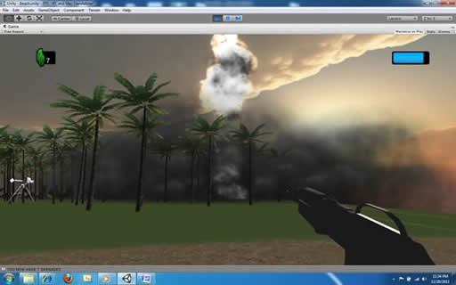
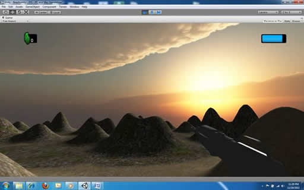
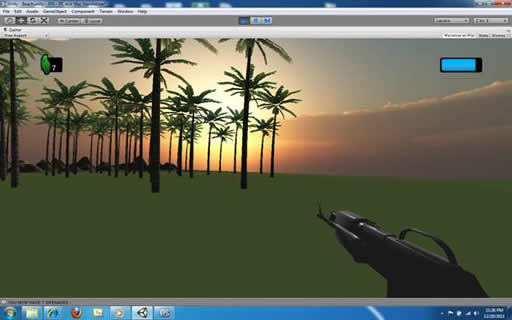
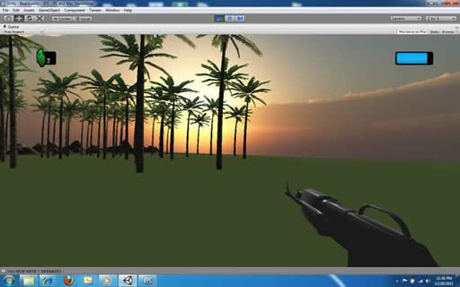
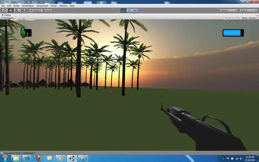

Unity
These are some of the Unity projects that I've been working on.. Most of these images are from a fairly generic FPS I've been working on to learn the software. The FPS demo stage includes:
- Beach, forest and rocky terrain.
- Guns that track the main player when approaching
- Ammo and health meter that add and subtract accordingly
This demo is still very early in development. I'll post more as it progresses.
 

